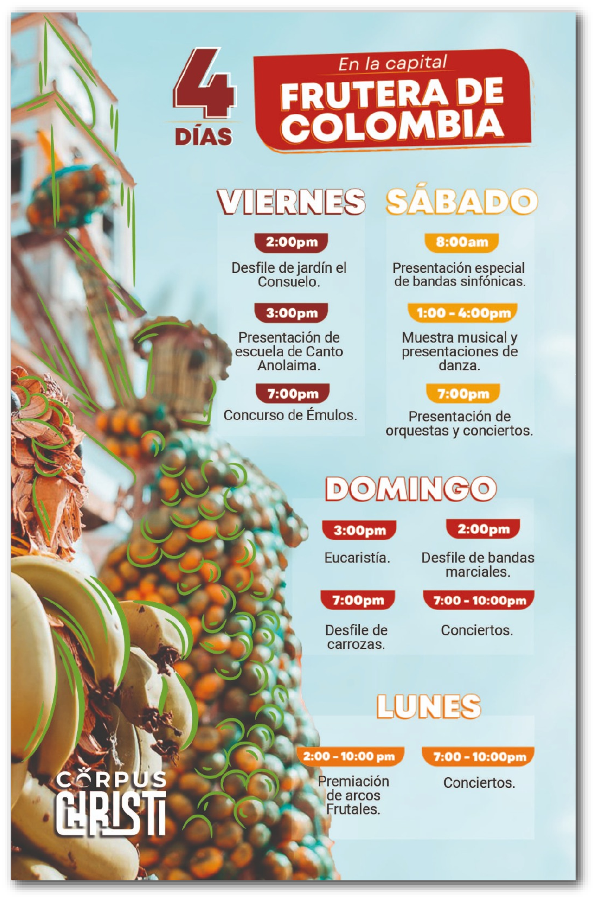
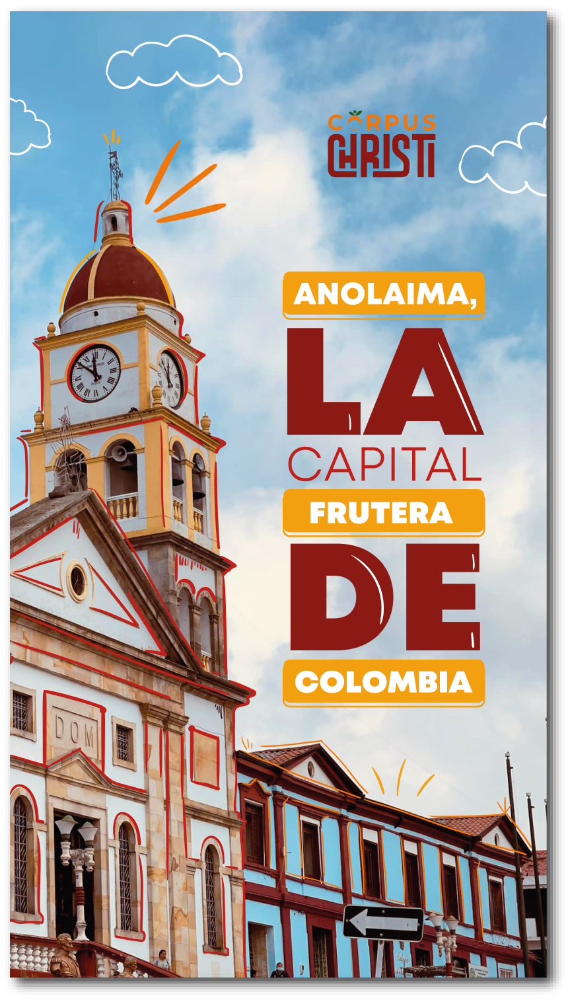
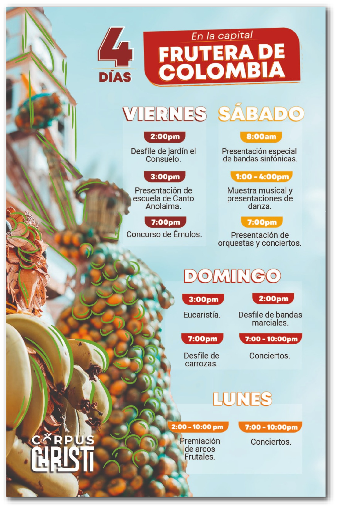
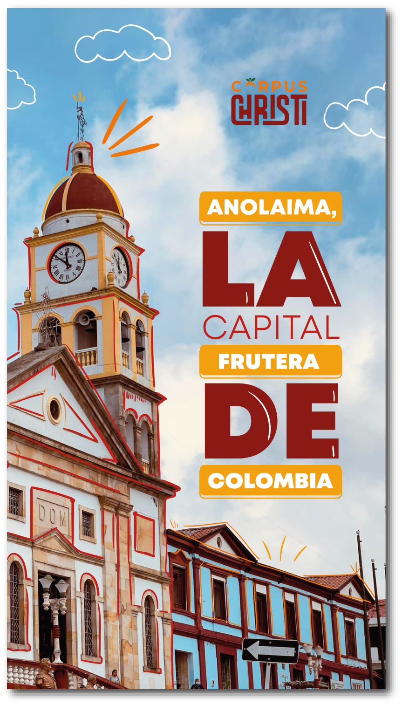

La propuesta de valor se centra en incluir las Ferias y Fiestas del Corpus Christi de Anolaima en un contexto de diseño investigativo, con piezas enfocadas en atraer a un público joven mediante interacción y dinamismo. Para lograrlo, se utilizarán herramientas como un recorrido 3D, redes sociales, realidad aumentada e impresos.

El recorrido virtual tiene como objetivo ofrecer una visión clara de las actividades del evento, así como de los principales sitios turísticos, gastronómicos y culturales de la feria. De esta manera, se busca proporcionar una experiencia interactiva y efectiva para conocer mejor la ubicación y los atractivos de la feria.


TIK TOK


Se creo contenido digital exclusivo para las redes sociales de las Ferias y Fiestas del Corpus Christi en Anolaima, incluyendo piezas interactivas, videos cortos, reels y fotografías. El objetivo es generar expectativas entre los jóvenes sobre lo que pueden esperar de la feria, a través de propuestas gráficas atractivas y dinámicas.
Empaque de Recordatorios
Nuestros empaques buscar brindan al cliente buena calidad, comodidad y portabilidad, los cuales representan la esencia de las ferias y fiestas del Corpus Christi, donde se muestra la importancia de los arcos frutales en esta celebración y de esta forma incentivar a las personas con el objetivo de generar mayor participación y visibilidad de la Feria del Corpus Christi de Anolaima.
Recordatorios


Llave simbólica
Moneda Conmemorativa
Pines Decorativos
Plegable

 


